<ion-content>
  <div *ngFor="let histo of reversedList">
    <ion-card>
      <ion-item>
        <ion-icon name="pin" slot="start"></ion-icon>
        <ion-label>Votre score était de {{histo.score}}</ion-label>
      </ion-item>
      <ion-card-content>
        {{histo.timestamp}}
      </ion-card-content>
    </ion-card>
  </div>
  <ion-button shape="round" color="dark" class="btn-primary" (click)="quizz()">
    
    <p class="textbutton"> Back </p>
  </ion-button>
</ion-content>
